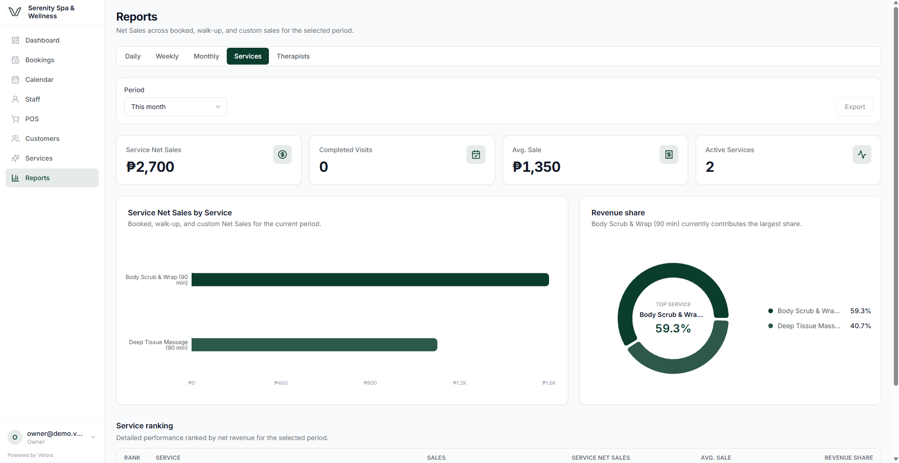
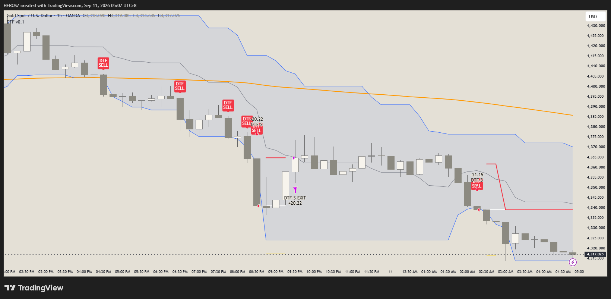

Web Systems
Business-focused applications, dashboards, authentication, database-backed features, APIs, and internal tools.
React · Next.js · Supabase · PostgreSQLAVAILABLE FOR REMOTE WORK
I build and improve digital systems for businesses—from web applications and automation to structured trading research and technical operations.
01 — EXPERTISE
I combine development, technical operations, and analytical thinking to turn complicated workflows into reliable, manageable systems.
Business-focused applications, dashboards, authentication, database-backed features, APIs, and internal tools.
React · Next.js · Supabase · PostgreSQLStructured Forex and XAUUSD monitoring, multi-timeframe research, and rule-based signal validation.
XAUUSD · MT5 · TradingView · ResearchPractical workflows that reduce repetitive work, connect tools, improve QA, and keep technical projects organized.
Automation · APIs · QA · Git02 — SELECTED WORK
Selected systems showing how I approach product thinking, technical execution, validation, and business operations.
A multi-tenant business management platform for modern service businesses.
Business and branch management, staff, services, booking, calendar workflows, POS, reporting, permissions, and secure data architecture.

Turning trading concepts into repeatable, testable technical rules.
A private research and signal-validation system for multi-timeframe market analysis. Proprietary strategy logic remains private.

Repeatable processes for requirements, implementation, testing, quality review, documentation, and delivery.
03 — CAPABILITIES
React · Next.js · TypeScript · JavaScript · Supabase · PostgreSQL · API Integration · Git
Forex · XAUUSD · Technical Analysis · MT5 · TradingView · Market Research · Signal Validation
Technical VA · Automation · Quality Assurance · Technical Support · Project Organization · Documentation
04 — LET'S WORK TOGETHER
I'm open to long-term Technical VA, trading support, web development, and automation opportunities.